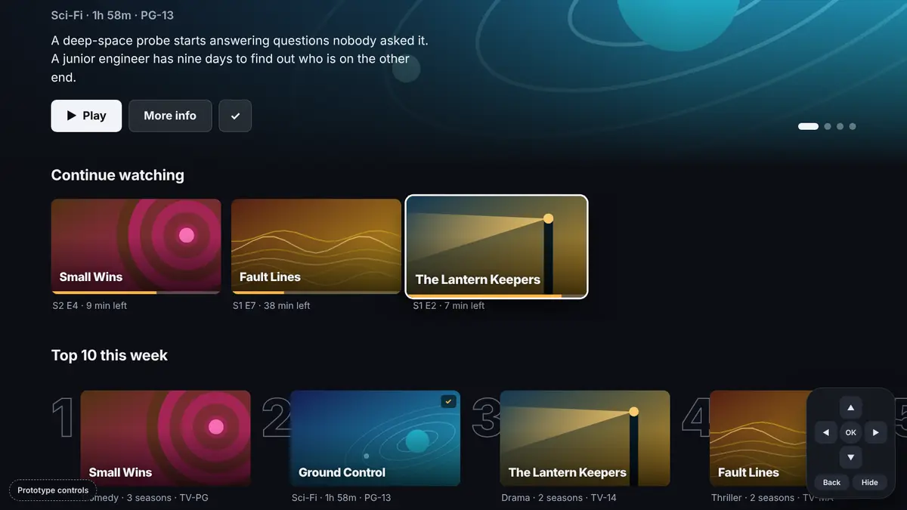
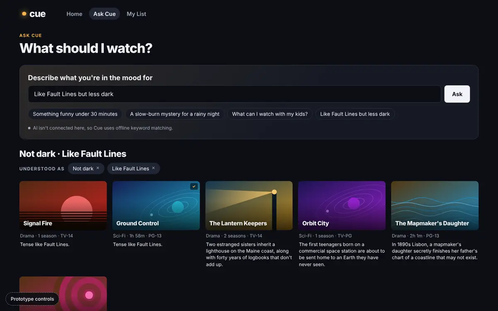
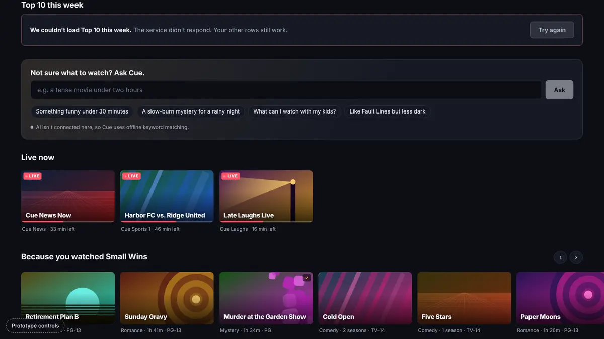
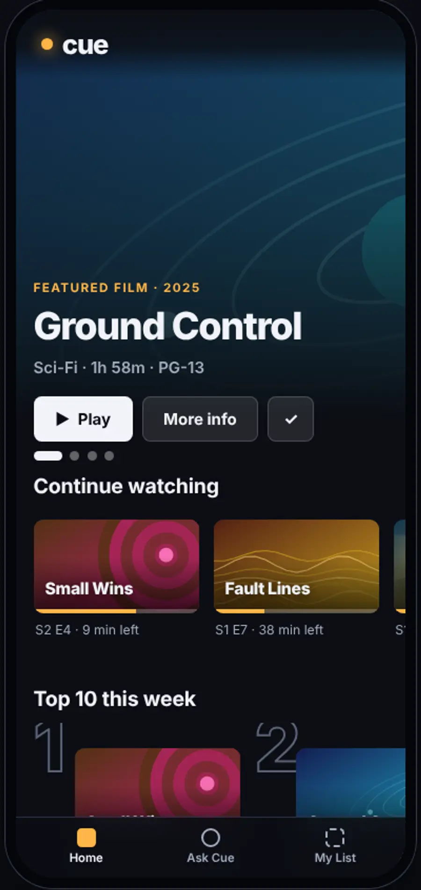

Case study 01 · Streaming prototype
Cue
I wanted to see if a streaming home screen could help people pick something to watch faster, and still feel right whether you're using a mouse, your phone or a TV remote.
- Role
- Interaction design and front-end
- Stack
- React 19, TypeScript, Next.js, Generative AI
- Platforms
- Web, mobile, 10-foot TV
- Year
- 2026

The problem
A lot of the time people open a streaming app already wanting to watch something, they just don't know what yet. The home screen is rows and rows of posters, which is fine with a mouse, slower on a phone, and really slow with a remote, where every move is a button press and typing a search takes forever.
I wanted to build something people could actually click through instead of static screens, to test two things. First, can the same components work right with a mouse, a thumb and a remote. Second, can you just ask for something in plain words and have the app be upfront about how it understood you.
Interaction decisions
Rows remember where you left off
If you go down to another row and then come back up, you should land on the same card you were on before, not whatever card happens to be closest. TV apps do this and you only really notice when it's missing. Cue keeps track of the last card you were on in each row and takes you back to it.
Showing what the AI understood
A request like “like Fault Lines but less dark” can mean a lot of things, so Cue shows how it read it as little chips, like “Not dark” and “Like Fault Lines.” If one is wrong you remove it and it searches again. On a TV that's a big deal, because removing a chip is one click and retyping the whole thing is a lot of clicks.
Every result also says why it was picked, so it doesn't feel random.

It can only recommend real titles
The AI model only gets Cue's catalog and has to answer in a set format. Before anything shows up, every title it sends back gets checked against the catalog, so it can't make up a show. If the AI doesn't answer, or the answer comes back broken, Cue switches to a simpler keyword matcher and tells you. That also means the feature still works with no API key at all.
One broken row doesn't break the page
Every row loads on its own. If the Top 10 fails, only that row shows an error with a Try again button and the rest of the app keeps working. While things load you see gray placeholder cards that are the same shape as the real ones, so nothing jumps around when the data comes in.

The same components on every screen
I used CSS container queries, so the components react to the space they're in and not the whole browser window. That means the phone preview is the actual responsive layout running in a 390px frame, not a separate mockup. Under 720px the top menu turns into a tab bar at the bottom, the banner gets shorter and the rows become swipeable.
It also follows the reduced motion setting, and the featured banner stops rotating when you're hovering on it or have it selected.

Controls for whoever runs the test
Since this is a prototype and the point is to test it, there's a panel outside the app for the person running a session. You can switch devices, slow the network down, make a row fail on purpose, or turn off motion. That way you can show someone the error state when you want to, instead of waiting and hoping it happens.
How it's built
Everything in the UI goes through one TypeScript interface, CueApi. There are two versions of it: one calls the Next.js API routes and one runs right in the browser. So the exact same components run as a full Next.js app and as a single HTML file with no server.
- The arrow key navigation is its own file (
src/lib/spatialNav.ts). It finds the next card in the direction you pressed and remembers your spot in each row. - There are no image files. The poster art is SVG made from each title's colors and a pattern, so every title still looks different.
- All the shows, people and channels are made up.
What changed while building
- The keyword matcher was too loose. Typing “like Fault Lines but less dark” gave back a sitcom, just because the sitcom wasn't dark. I made it stricter, so now a result has to actually share a genre or mood.
- The Top 10 numbers were getting cut off at the top of the row, so the row got more room.
- Arrow keys were getting in the way of scrolling on web. Now they only move focus once you're already using the keyboard to get around the app. Otherwise they scroll the page like normal.
Testing
I'm going to have them find something under 30 minutes, pick a show back up where they left off, and use Ask Cue on the TV layout. I'll time how long it takes them to start watching, write down where they get stuck, and add what I find and what I change here.
What I'd do next
- Voice search for TV, since most remotes have a mic button and typing with arrow keys is the slowest part.
- Build the TV layout in LightningJS to see how it runs on cheaper TVs and streaming sticks.
- Add episode data, so it could give you a “catch me up” summary based on what you actually watched.